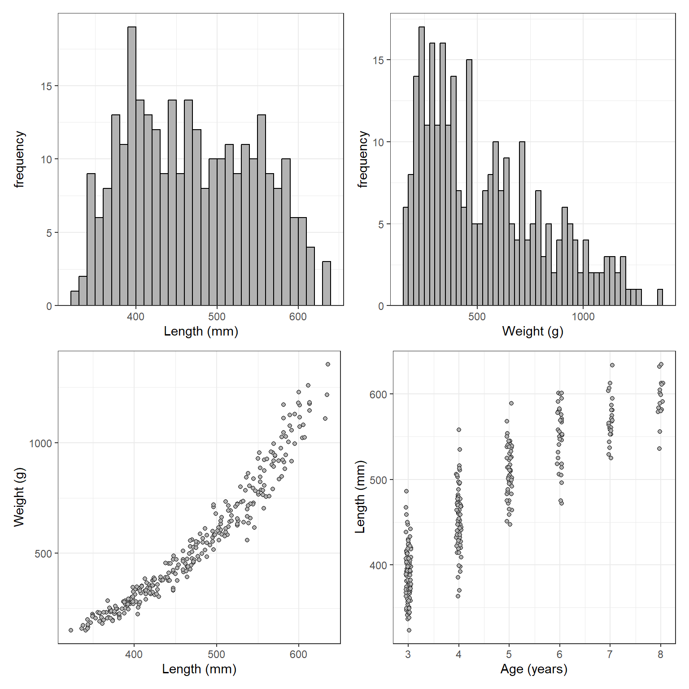

library(FSA) # for headtail()
library(dplyr) # for mutate(), group_by(), summarize(),
library(ggplot2)
library(patchwork) # for combining plots
theme_set(theme_bw())
set.seed(678394) # for reproducibility of randomly created data
Note
The following packages are loaded for use below. I also set the default ggplot theme to theme_bw() for a classic “black-and-white” plot (rather than the default plot with a gray background) and set the random number seed for reproducibility of the randomly generated sample data below.
Introduction
Recently I was tasked with estimating mean weights-at-age for data that contained no weights, but did contain lengths and ages (ages were from applying an age-length key). A weight-length relationship was available (derived from a smaller sample from the same population). A question arose about whether the weight-length relationship should be used to predict weights for individual fish and then summarized to estimate mean weights at age or whether the weight-length relationship should be applied to summarized mean lengths-at-age to estimate mean weights-at-age.
This issue has been addressed in the literature. Ricker (1975) states that the true mean weight is always greater, “on the order of 5%,” than the mean weight computed from the weight-length relationship with the mean length. Tesch (1971) suggested that the error in predicting mean weight-at-age with the weight-length relationship using mean length-at-age would be about 5-10%. In a simulation study, Nielsen and Schoch (1980) found that Tesch’s suggestion was too general and that error was less than 10% when the coefficient of variation (CV; standard deviation divided by mean) in lengths was less than 10%, but could be substantially higher when the CV was higher, with the specific result dependent on the weight-length regression exponent (b).1 Pienaar and Ricker (1968) and Beyer (1991) both suggested corrections to reduce the bias in the mean weight-at-age produced by the weight-length regression using the mean length.
1 Nielsen and Schoch (1980) provided a nice geometric description of why this bias occurs.
In this post, I explore the bias in using the weight-length regression to estimate mean weight-at-age from mean length-at-age and the correction factors suggested by Beyer (1991).
Sample Data
I created a very simple population that consisted of lengths, weights, and ages of fish. Ages were derived from a population with roughly a 30% annual mortality rate. Mean lengths-at-age were modeled with a von Bertalanffy growth curve using a \(L_{\infty}\)=650 mm, \(K\)=0.3, and \(t_{0}\)=0. Individual lengths were modeled from normal distributions using the modeled mean length and a constant standard deviation of 30 mm) within each age-class. Weights were predicted directly from a known weight-length relationship without any error (in wt1) and with a small amount of error (in wt2).
# Generate some lengths
ages <- 3:8
N3 <- 100 ## number at age-3
A <- 0.3 ## annual morality rate
ns <- round(N3*(1-A)^(ages-min(ages)),0) ## numbers at age
Linf <- 650 ## von B parameters
K <- 0.3
t0 <- 0
mns <- Linf*(1-exp(-K*(ages-t0))) ## mean length-at-age
sds <- rep(30,length(mns))
lens <- NULL
for (i in 1:length(ages)) ## individual lengths-at-age
lens <- c(lens,rnorm(ns[i],mean=mns[i],sd=sds[i]))
loga <- -13.5 ## weight-length relationship parameters
b <- 3.2
# Compute weights from the W-L relationship, w/ & w/o error
df <- data.frame(age=rep(ages,ns),len=round(lens,0)) |>
mutate(wt1=round(exp(loga+b*log(len)),0),
wt2=round(exp(loga+b*log(len)+rnorm(length(lens),mean=0,sd=0.1)),0))
headtail(df)#R| age len wt1 wt2
#R| 1 3 374 235 197
#R| 2 3 401 293 313
#R| 3 3 369 225 210
#R| 292 8 580 955 923
#R| 293 8 605 1093 1081
#R| 294 8 589 1003 1126Modeling data in this way is simple, but at least somewhat realistic (Figure 1).
lenh <- ggplot(data=df,aes(x=len)) +
geom_histogram(binwidth=10,boundary=0,color="black",fill="gray70") +
scale_x_continuous(name="Length (mm)") +
scale_y_continuous(name="frequency",expand=expansion(mult=c(0,0.05)))
lenw <- ggplot(data=df,aes(x=wt2)) +
geom_histogram(binwidth=25,boundary=0,color="black",fill="gray70") +
scale_x_continuous(name="Weight (g)") +
scale_y_continuous(name="frequency",expand=expansion(mult=c(0,0.05)))
wl <- ggplot(data=df,aes(x=len,y=wt2)) +
geom_point(pch=21,fill="gray70",color="black") +
scale_x_continuous(name="Length (mm)") +
scale_y_continuous(name="Weight (g)")
al <- ggplot(data=df,aes(x=age,y=len)) +
geom_jitter(pch=21,fill="gray70",color="black",width=0.05,height=0) +
scale_x_continuous(name="Age (years)") +
scale_y_continuous(name="Length (mm)")
(lenh + lenw) / (wl + al)
Explore the Bias
Below the mean length (mnlen) and mean weight without any random erro (i.e., the “true” mean weight for individuals modeled above; true.mnwt) are calculated (using group_by() and summarize()). The predicted mean weight at each age is then computed from the mean length at each age and the weight-length relationship (i.e., pr.mnwt using mutate() and the regression coefficient values from above). Finally a percentage error between the predicted and true mean weights is computed for each age (in dif.minwt).2
2 The as.data.frame() is used here because I don’t like the tibble format that is returned by summarize().
sum1 <- group_by(df,age) |>
summarize(mnlen=mean(len),
true.mnwt=mean(wt1)) |>
mutate(pr.mnwt=exp(loga+b*log(mnlen)),
dif.mnwt=(pr.mnwt-true.mnwt)/true.mnwt*100) |>
as.data.frame()The results from this one sample show that the mean weights computed from the mean lengths and the weight-length regression (i.e., pr.mnwt) are lower at each age then the “true” mean weights (true.mnwt; Table 1).
| age | mnlen | true.mnwt | pr.mnwt | dif.mnwt |
|---|---|---|---|---|
| 3 | 391 | 276 | 270 | -2.15 |
| 4 | 454 | 448 | 438 | -2.23 |
| 5 | 511 | 644 | 636 | -1.29 |
| 6 | 550 | 817 | 806 | -1.35 |
| 7 | 570 | 912 | 906 | -0.72 |
| 8 | 594 | 1034 | 1028 | -0.58 |
Table 1: Summary table using weights without any error and no correction for the predicted mean weights.
Of course, weight-length relationships are not without error, so the weights with a small amount of random error were used to determine if the pattern of a negative bias when predicting mean weights from mean lengths persists with more realistic data.3 Results from this one set of more realistic data showed a similar, though not as consistent, degree of negative bias when predicting mean weights from mean lengths (Table 2).
3 Only a small error was added because the relationship between weight and length is very strong for most fishes. The r-squared for this relationship was a realistic 0.969.
| age | mnlen | true.mnwt | pr.mnwt | dif.mnwt |
|---|---|---|---|---|
| 3 | 391 | 277 | 270 | -2.55 |
| 4 | 454 | 448 | 438 | -2.24 |
| 5 | 511 | 643 | 636 | -1.12 |
| 6 | 550 | 830 | 806 | -2.87 |
| 7 | 570 | 906 | 906 | -0.02 |
| 8 | 594 | 1054 | 1028 | -2.50 |
Table 2: Summary table using weights with a small amount of error and no correction for the predicted mean weights.
I then performed the analysis above 1000 times, keeping track of the percent error between the predicted weight and the true mean weight for each age for each sample.4
4 The code here also uses the correction factors discussed above; those results are presented further below.
The results of this simulation suggest an average negative bias near 4% for age-3 fish and between about 1 and 2% for all older fish (Table 3). Note that the CV in length for each age varied between 2.7% and 9.8% in these simulations.
| age3 | age4 | age5 | age6 | age7 | age8 |
|---|---|---|---|---|---|
| -2.49 | -1.97 | -1.74 | -1.5 | -1.32 | -1.39 |
Table 3: Mean percentage difference in uncorrected predicted mean and true mean weights by age class for 1000 simulations.
Similar patterns were found using different values of the weight-length relationship exponent \(b\) (see Appendix). However, larger negative biases were observed as the standard deviation in lengths increased (see Appendix).
A Possible Correction
As noted above, Pienaar and Ricker (1968) and Beyer (1991) offered methods to reduce or eliminate the bias from using the weight-length regression to estimate mean weight-at-age from mean length-at-age. Beyer’s corrections were simple as they were based on the CV of lengths and the \(b\) coefficient from the weight-length regression. Beyer specifically offered three possible bias correcting factors for isometric growth, allometric growth assuming a lognormal distribution, and allometric growth assuming a normal distributions for lengths. Here I will only consider Beyer’s corrections for allometric growth with lognormal (i.e, Beyer’s equation 16) and normal (i.e., Beyer’s equation 18) distributions of lengths within age classes.
Beyer’s formulae are implemented by modifying group_by() and summarize() used previously. Specifically the standard deviation of lengths is calculated (in sdlen) so that the CV of lengths can be calculated (in cvlen). The correction factors are then computed (in cfn for the normal distribution and cfl for the lognormal distribution).
sum2a <- group_by(df,age) |>
summarize(mnlen=mean(len),sdlen=sd(len),
true.mnwt=mean(wt2)) |>
mutate(cvlen=sdlen/mnlen,
cfn=1+b*(b-1)/2*(cvlen^2), # eqn 18
cfl=(1+cvlen^2)^(b*(b-1)/2), # eqn 16
pr.mnwt=exp(loga)*mnlen^b,
pr.mnwt.n=pr.mnwt*cfn,
pr.mnwt.l=pr.mnwt*cfl,
dif.mnwt=(pr.mnwt-true.mnwt)/true.mnwt*100,
dif.mnwt.n=(pr.mnwt.n-true.mnwt)/true.mnwt*100,
dif.mnwt.l=(pr.mnwt.l-true.mnwt)/true.mnwt*100) |>
as.data.frame()These calculations were again repeated 1000 times and summarized in the bottom two rows of Table 4. These results suggest that the mean bias in predicted weights at age when corrected with a correction factor appear to only be on the order of a quarter to a half a percent. These corrections seems to perform fairly consistently across a few different values of the weight-length regression exponent \(b\) and standard deviations in lengths (see Appendix).
| age3 | age4 | age5 | age6 | age7 | age8 | |
|---|---|---|---|---|---|---|
| No correction | -2.49 | -1.97 | -1.74 | -1.50 | -1.32 | -1.39 |
| Normal (eqn 18) | -0.43 | -0.45 | -0.52 | -0.45 | -0.35 | -0.49 |
| Lognormal (eqn 16) | -0.41 | -0.45 | -0.51 | -0.44 | -0.35 | -0.48 |
Table 4: Mean percentage difference in two types of corrected predicted mean and true mean weights by age class for 1000 simulations.
Why Worry About This?
Why am I worried about this if the bias is on the order of 4% or less? First, for my application, we are estimating mean weight so that we can expand to total biomass. While a 4% error on an individual fish may seem inconsequential, that error can become quite important when expanded to represent total biomass, especially when it is a consistent negative bias.
So, why worry about correction factors when I can easily predict the weight for individual fish with the weight-length regression and then summarize these fish to get mean weight at age? In my situation, it appears that some of our mean lengths at age, and by extension mean weights at age, are poorly estimated because of small sample sizes at some ages. I am considering fitting a growth model (e.g., von Bertalanffy growth model) to the length-at-age data such that the fitted model can be used to predict mean lengths at age. The advantage of this is that information at other ages can be used to inform the calculation of mean length at an age. [The potential downside, of course, is that I would be prescribing a smooth curve to the growth trajectory.] If I can then estimate mean weights at age with minimal bias from the mean lengths at age from the growth model, then this could (I would need to test this) be beneficial in my situation.
Summary
Mean weights at age appear to be estimated with bias when a weight-length relationship is applied to mean lengths at age without any correction factor. The correction factors suggested by Beyer (1991) are easy to implement and seem to reduce the bias in predicted mean weights-at-age to near negligible levels. Thus, if mean weights at age cannot be predicted from individual fish, then it may be possible to get reasonable estimates from the weight-length relationship and mean lengths at age.
References
Beyer, J. E. 1991. On length-weight relationships. Part II. Computing mean weights from length statistics. FishByte 9:50–54.
Nielsen, L. A., and W. F. Schoch. 1980. Errors in estimating mean weight and other statistics from mean length. Transactions of the American Fisheries Society 109(3):319–322.
Pienaar, J. V., and W. K. Ricker. 1968. Estimating mean weight from length statistics. Journal of the Fisheries Research Board of Canada 25(12):2743–2747.
Ricker, W. E. 1975. Computation and Interpretation of Biological Statistics of Fish Populations. Bulletin of the Fisheries Research Board of Canada 191.
Tesch, F. W. 1971. Age and Growth. Pages 97–130 in W. E. Ricker, editor. Methods for {Assessment} of {Fish} {Populations}, 2nd edition. Blackwell Scientific Publications, Oxford, England.
Appendix: Summaries Using Different Values of b and SDs
| age3 | age4 | age5 | age6 | age7 | age8 | |
|---|---|---|---|---|---|---|
| No correction | -1.55 | -1.28 | -1.06 | -0.91 | -0.84 | -0.90 |
| Normal (eqn 18) | -0.43 | -0.47 | -0.39 | -0.34 | -0.33 | -0.43 |
| Lognormal (eqn 16) | -0.43 | -0.47 | -0.39 | -0.34 | -0.33 | -0.43 |
Summary table with everything the same but b=2.5.
| age3 | age4 | age5 | age6 | age7 | age8 | |
|---|---|---|---|---|---|---|
| No correction | -2.21 | -1.74 | -1.48 | -1.38 | -1.16 | -1.17 |
| Normal (eqn 18) | -0.44 | -0.46 | -0.42 | -0.48 | -0.34 | -0.39 |
| Lognormal (eqn 16) | -0.42 | -0.46 | -0.42 | -0.48 | -0.33 | -0.39 |
Summary table with everything the same but b=3.0.
| age3 | age4 | age5 | age6 | age7 | age8 | |
|---|---|---|---|---|---|---|
| No correction | -3.07 | -2.29 | -2.04 | -1.73 | -1.59 | -1.50 |
| Normal (eqn 18) | -0.47 | -0.42 | -0.52 | -0.41 | -0.40 | -0.40 |
| Lognormal (eqn 16) | -0.45 | -0.41 | -0.51 | -0.40 | -0.39 | -0.39 |
Summary table with everything the same but b=3.5.
| age3 | age4 | age5 | age6 | age7 | age8 | |
|---|---|---|---|---|---|---|
| No correction | -5.98 | -4.50 | -3.82 | -3.32 | -2.93 | -2.75 |
| Normal (eqn 18) | -0.38 | -0.46 | -0.48 | -0.42 | -0.28 | -0.28 |
| Lognormal (eqn 16) | -0.26 | -0.40 | -0.44 | -0.39 | -0.25 | -0.26 |
Summary table with everything the same but SDs at 50.
| age3 | age4 | age5 | age6 | age7 | age8 | |
|---|---|---|---|---|---|---|
| No correction | -10.66 | -8.03 | -6.71 | -5.84 | -5.20 | -4.96 |
| Normal (eqn 18) | -0.36 | -0.36 | -0.44 | -0.30 | -0.23 | -0.27 |
| Lognormal (eqn 16) | 0.09 | -0.12 | -0.28 | -0.17 | -0.13 | -0.18 |
Summary table with everything the same but SDs at 70.
Reuse
Citation
BibTeX citation:
@misc{h.ogle2017,
author = {Derek H. Ogle},
title = {Mean {Weights} at {Ages} {From} {Lengths}},
date = {2017-08-09},
url = {https://fishr-core-team.github.io/fishR//blog/posts/2017-8-9_Mean_Weights},
langid = {en}
}
For attribution, please cite this work as:
Derek H. Ogle. 2017, August 9. Mean
Weights at Ages From Lengths.